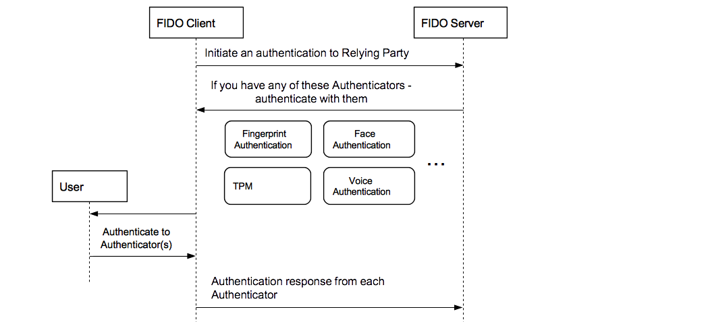

Fido架构阐述
-
- 1.1 总体架构
- 1.2 总体流程阐述
-
-
- 3.1 fido client 概述
- 3.2 fido Client API android
- 3.3 fido Client 同ASM交互
-
- fido client ASM 概述
- fido client ASM 同fido Client交互
- fido client ASM 同 fido 认证器交互
-
- 认证器概述
- fido client 认证器同 fido client ASM 的交互
- 认证器返回的信息同服务器的关联
1.总体架构
1.1总体架构
fido协议基于传统的client-sever结构，如下图所示从服务器从服务器端分为至上而下分为WebSever，FidoServer，FidometeDataSever，客户端至上而下分为Fido Client，ASM，Fido认证器。 接下来依次解释每一层的作用：
接下来依次解释每一层的作用：
- WebSever：一个传统的web服务器层，主要进行负责对监听client端的请求，并将数据交给fido Sever，同时会将fido Sever的数据返沪给client端，封装了fido sever，使之成为一个web服务器的形式
- FidoServer：一个fido服务器，主要负责对客户端的产生的各种用户数据和安全信息做逻辑处理操作，并做数据存储；同时关联fidometaSever，做安全性认证。
- FidoMetaDataSever：一个fido官方的安全性认证的服务器，比如验证fido认证器的类型；认证fido认证器包含的证书是否正确。
- FidoClient:Fido 客户端，将整个fido包装成为一个可以调用的API，提供接口让给（浏览器/android/iOS）应用调用，同时处理服务器的发来的数据，和ASM进行数据传递.
- ASM:同认证器协同交互的软件层，主要做统一各种各样的认证器在软件层次上的统一，同时将和认证器生成的数据做存储和查询。
- 认证器：验证用户的身份，生成fido认证最关键的公钥和私钥，并且通过私钥来对服务器的挑战进行签名，服务器认证用户的身份，是fido协议最底层的一个层次，也是实现fido协议最关键的一个层次。
1.2总体流程阐述
-
fido获取信息的过程：
- Fido Client在每次接收到FidoSever的Request信息之后（任何操作流程）都要获取和ASM关联的认证器的信息，认证器的信息大致包括:authenticatorIndex; isUserEnrolled;aaid;assertionScheme; authenticationAlgorithm;userVerification等信息，用于在之后的操作中使用。
-
fido注册的过程：（这里只针对一因子的认证器）
fido注册的基本流程大致阐述如下：
- 首先，客户端发送注册信息给fido Sever
- fido Sever收到客户端的请求之后，会在生成一系列的注册有关请求数据
- fido client拿到服务器的认证数据后，形成最终的挑战信息，并且将数据再次往ASM传递
- ASM收到信息之后，命令认证器认证用户身份，如果认证通过，根据认证器索引去查找对应的认证器，使用认证器的摘要算法来生成服务器挑战的摘要，并且生成KHAccessToken的数据
- 认证器收到ASM的信息后，生成公私钥对，同时生成KeyHandle和KeyId，同时生成其他信息（比如证书信息），并用私钥进行对挑战签名，然后将KeyHandle（加密后）和KeyId，公钥信息返回给ASM
- ASM拿到认证器的信息之后，存储KeyId和KeyHandle，然后将认证器返回的信息加以封装返回给fido client
- fido client 再次为信息进行封装处理，加入Header信息等，然后将信息发送给fido服务器
- fido服务器收到信息后，首先验证证书有效性，组织签名数据，使用对应的公钥做验签操作，验签成功后，告诉客户端注册成功。
- 大致的操作图如图所示：

-
fido认证的过程：
- 首先，客户端发送认证信息给fido Sever
- fido Sever收到客户端的请求之后，会在生成一系列的认证有关请求数据（包括KeyID）
- fido client拿到服务器的认证数据后，形成最终的挑战信息，并且将数据再次往ASM传递
- ASM收到信息之后，命令认证器认证用户身份，如果认证通过，根据认证器索引去查找对应的认证器，并且用认证器的摘要算法生成挑战的摘要信息，然后根据服务器发送的KeyID找到对应的KeyHanlde，并且生成KHAccessToken的数据，将数据发送给认证器
- 认证器收到ASM的信息后，通过KHAccessToken 查找可以信任的KeyHandle，然后解密KeyHandle，用KeyHandle中的私钥去对挑战信息的摘要进行签名，然后其他数据返回给ASM。
- ASM拿到认证器的信息之后，再次做封装，交给Fido Client。
- fido client 再次为信息进行封装处理，加入Header信息等，然后将信息发送给fido服务器。
- fido服务器收到信息后，织签名数据，使用对应的公钥做验签操作，若验签成功，则告诉客户端验证过程成功。
- 大致的操作图如图所示：
- fido注销的过程：
暂时没有看
2.Fido Sever
Fido Sever
由于本文档主要是讲解fido客户端的，所以，fido服务器这里简单说明下功能：
- 1.Fido sever接受客户端的信息，并且根据操作的字段的不同，产生不一样的操作请求信息
- 2.Fido sever具有存储数据的功能，比如存储KeyID，KeyHandle，publicKey，UserName。
- 3.Fido sever具有验证客户端操作是否正确的功能：比如使用公钥去验证客户端返回的数据签名信息，检验挑战信息的签名是否正确，根据客户端返回证书信息去向FidoMetaDataSever查询
- 4.Fido sever具有获取fido官方的信息的功能：比如获取到所有认证器的类型信息，加密算法信息等。
3.Fido Client
3.1 fido client 概述
fido client的是一个对外的API 接口，主要提供了应用程序应该怎么样去调用fido认证模型的接口，将fido体系整个作为一个软件的API。同时，Fido Client也会对Fido Sever的数据，进行简单的处理，形成ASM需要的数据类型后，发送给ASM进行调用。
3.2 fido client API for android
关于Fido Client API的Android 版本的使用，可以参考这个链接fido android API
3.3 fido Client 同ASM交互
Fido Client 主要接收到服务器的request信息，然后主要进行以下几点操作：
- 根据服务器的发送的AppId获取facetId
- 暂时存储部分的服务器信息。
- 形成FinalChallengeParams字段
- 根据服务器的数据操作类型，摘选出服务器信息中的字段信息，形成对应ASMRequest可以识别的消息体，将消息发送给ASM。
- 监听来自ASM的ASMResponse数据，并对数据做适当的封装，返回给服务器
- 实现与服务器的安全通信（这个暂时没有研究)
4.fido client ASM
4.1 fido client ASM 概述
ASM是各种各样的认证器在软件上的统一。ASM主要负责了接受与FidoClient沟通，进行来自FidoClient的数据的处理，并引起认证器的响应，同时，接受来自认证器的信息，并对认证器产生的关键数据做存储和查询。ASM连接着FidoClient，统一不同类型的认证器，并且能对不同类型的认证器进行交互，调用。
4.2 fido client ASM 同fido Client交互
ASM同FidoClient的交互主要在以下几个方面：
- 1.将FidoClient的请求信息中的必要的字段信息摘取出来，作为TLV格式，形成认证器的Request信息，发送给认证器
- 2.使用认证器自己的特定的摘要信息算法计算FinalChallengeParams的摘要数值
- 3.监听验证器返回的信息情况，并对验证器的信息做适当的封装，传给FidoClient
4.3 fido client ASM 同认证器交互
ASM同认证器的交互信息主要包括一下几个方面：
- 1.ASM在形成向认证器传入请求数据之前，需要让调用认证器去验证用户身份。
- 2.ASM会形成KHAccessToken，作为认证器可以信任的数据依据，去访问认证器
- 3.若认证器是绑定类认证器，则存储KeyHandle和KeyId到认证器的数据库中，并在之后做查询，提取KeyHandle的功能。
5.认证器
5.1 认证器概述
认证器是根据用户注册的人体特征来对用户进行身份识别的硬件机器，这里的人体特征包括指纹，声音，虹膜等各种各样的信息，当然也就对应各种各样的认证器，比如指纹认证器，声音认证器，虹膜认证器
5.2 认证器和ASM的关系
认证器和ASM一个实现了fido协议的硬件端，一个是实现了fido的协议硬件向软件过渡的桥梁。ASM和认证器的关系主要体现在：
- 1.认证器通过ASM进行数据的交互，ASM将数据（比如KeyHandle，KHAccessToken等）交给认证器做逻辑处理，同时，认证器也将重要的信息交给ASM（KeyID，KeyHandle等等），同也有向fidoSever的交互的信息（签名信息，挑战信息，公钥等），也需要通过ASM来向上传递。
- 2. 认证器协同配合ASM做用户身份认证：ASM在每次操作之前，都让认证器去验证用户的身份是否正确，这里体现了认证器基于人体特征的身份识别功能。
- 3.根据用户的人体特征来产生公钥私钥对，并且具有自己的hash算法，让ASM用认证器特定的算法来生成挑战的摘要信息，用于服务器的之后的认证过程。